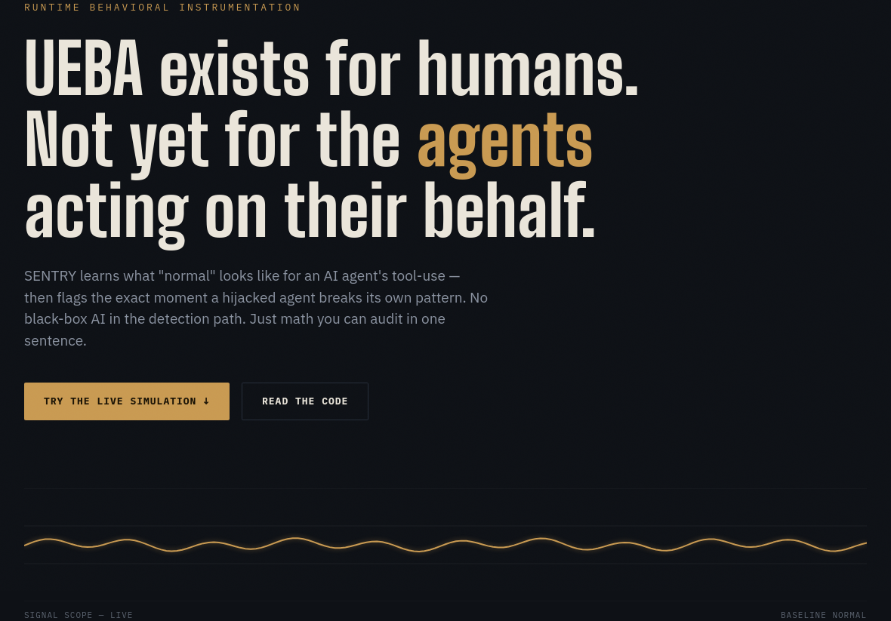

SENTRY
Runtime behavioral instrumentation for AI agents. UEBA exists for humans — not yet for the agents acting on their behalf.

THREAT MODELAgentic AI reached production faster than the tooling to monitor it. Most defenses screen prompts and outputs before an agent acts — nobody watches what the agent actually does once it has real tool access.
Sources: Gravitee State of AI Agent Security 2026 · Cloud Security Alliance / Token Security, Apr 2026 · NeuralTrust State of AI Agent Security 2026 — as cited on the live project site.
ARCHITECTURE / DETECTION PIPELINEThree deterministic checks run before any model is involved. The LLM never decides what's suspicious — it only narrates what the math already found.
Everything left of "Alert" is plain code — statistics and set membership, zero model calls.
BEHAVIOR BASELINESENTRY learns what "normal" tool-use looks like for a given agent, then flags the moment a hijacked agent breaks its own pattern.
SIMULATIONThe live site includes a simplified client-side reimplementation of the same three checks the real detector runs, with a "learn baseline" then "inject attack" flow you can try directly.
FAILUREThe first version only compared daily call totals against baseline. A simulated attack — 25 rapid database queries in two minutes — didn't fire, because 25 calls looked entirely normal against a ~17/day baseline. The burst was invisible on a daily view.
FIXAdded a 5-minute rolling-window burst detector, plus cooldown logic so one incident fires once instead of producing fifteen duplicate alerts.
RESULTWhat's real: the detection engine is tested — zero false positives across 284 normal baseline actions, 3 out of 3 real attack signals caught, verified by running the actual test suite, not assumed.
What's not yet true: the baseline is synthetic, not real production traffic. Both the attack and the detector were designed in-house, so this proves the logic works as intended — it has not been adversarially red-teamed by someone trying to evade it. Thresholds are hand-tuned on one scenario, not validated at scale.
Testing against real, unlabeled production traffic; inviting adversarial red-teaming from outside; validating thresholds across more scenarios than the one this was designed against.
STACK